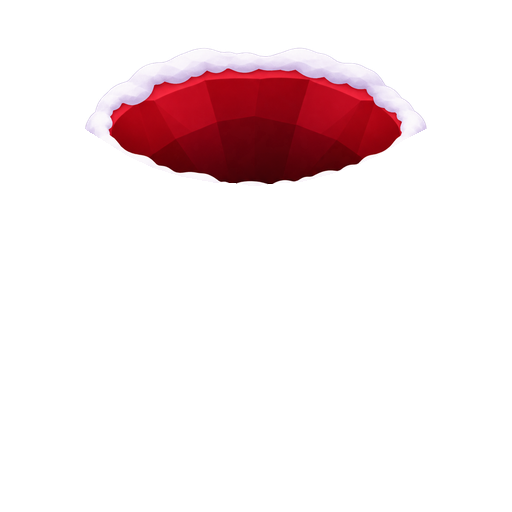
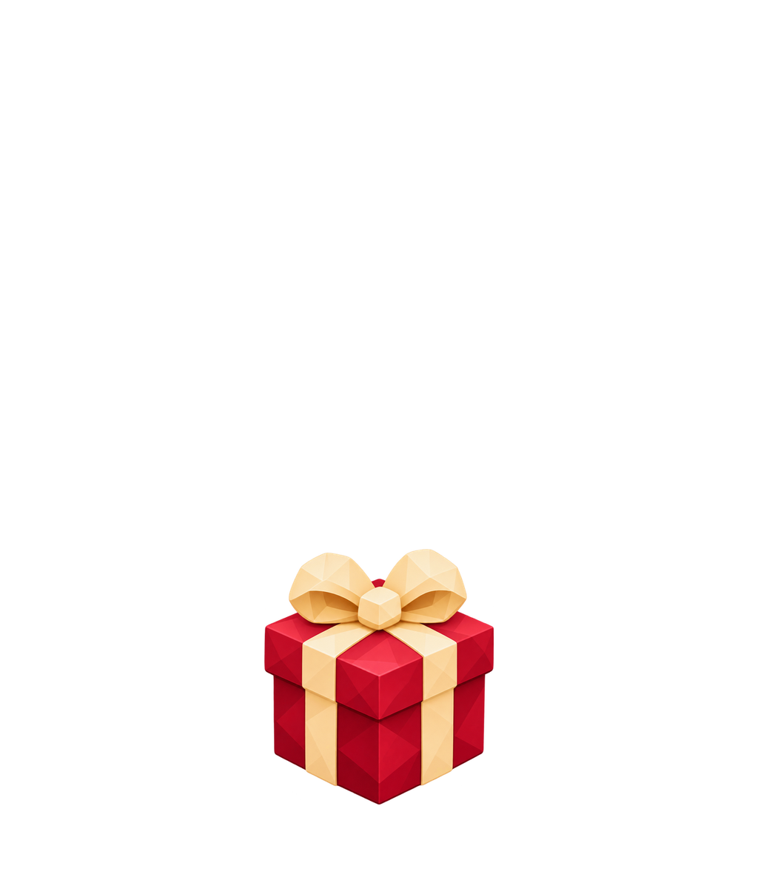
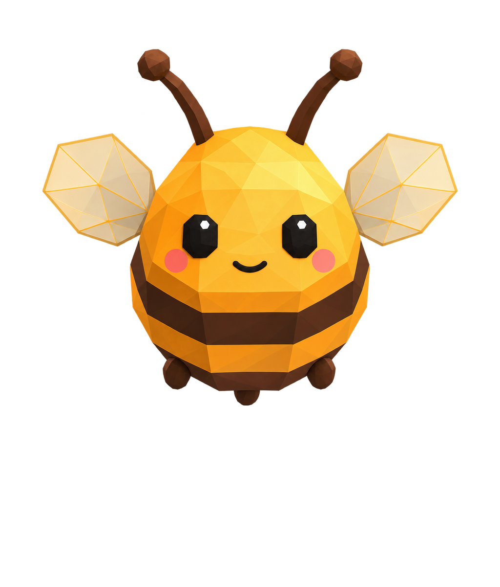
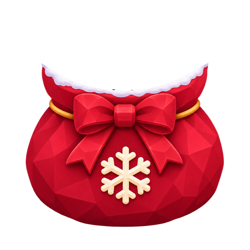
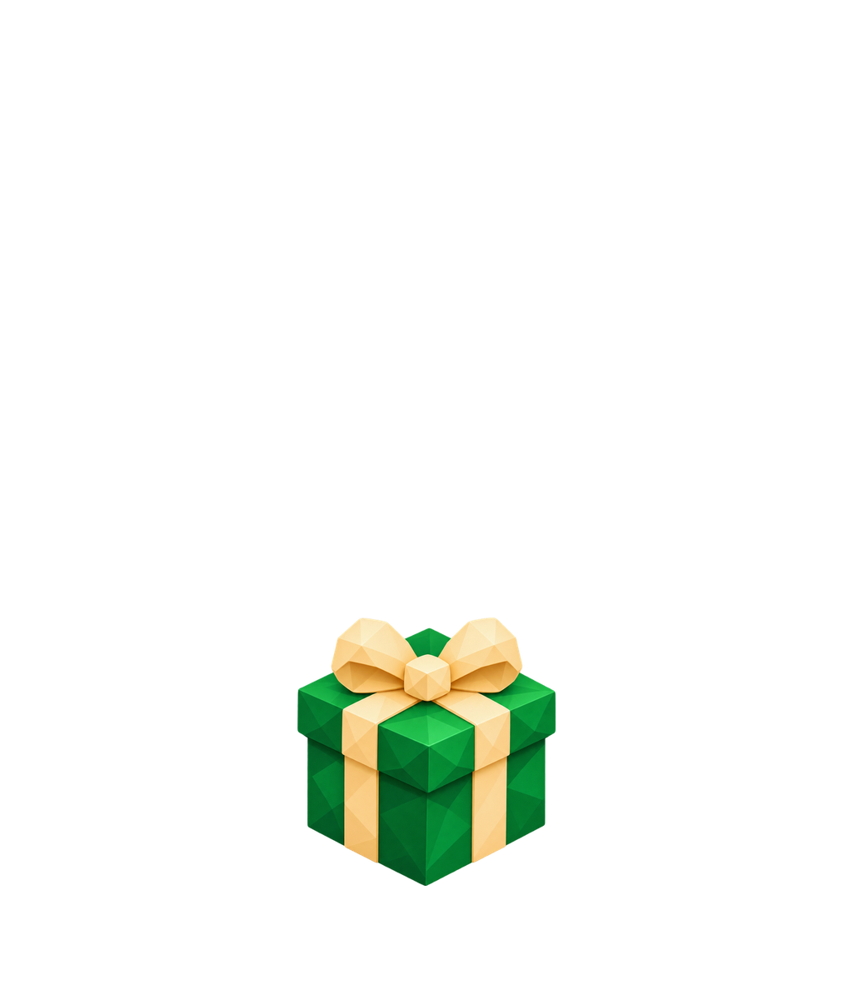
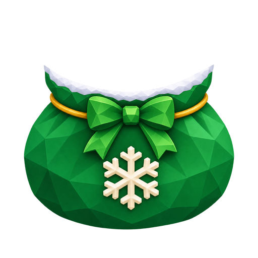
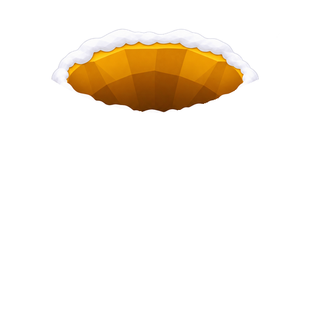
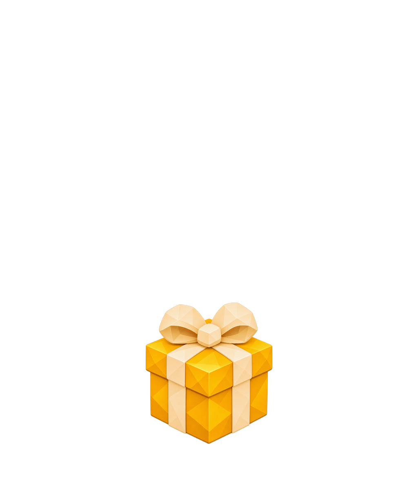
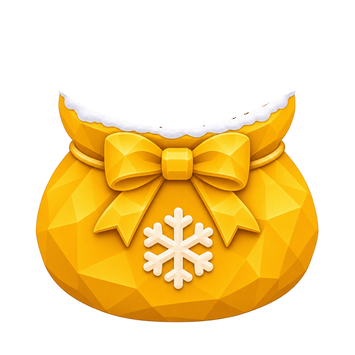
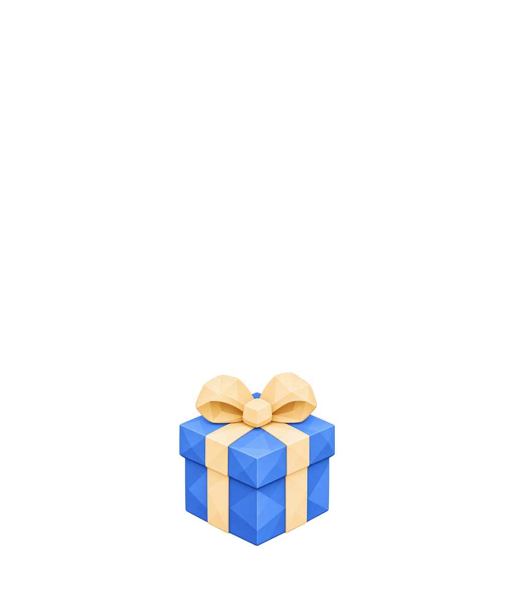

Пчёлы-носильщики
Примерка размера и переноски. Подарок отдельным слоем; пчёлы сохранены целиком.
Красный




Зелёный



Золотой



Голубой



В игре жест захвата ещё можно уточнить. Это проверка существующих спрайтов, без изменения механик.
Все 12 примерок